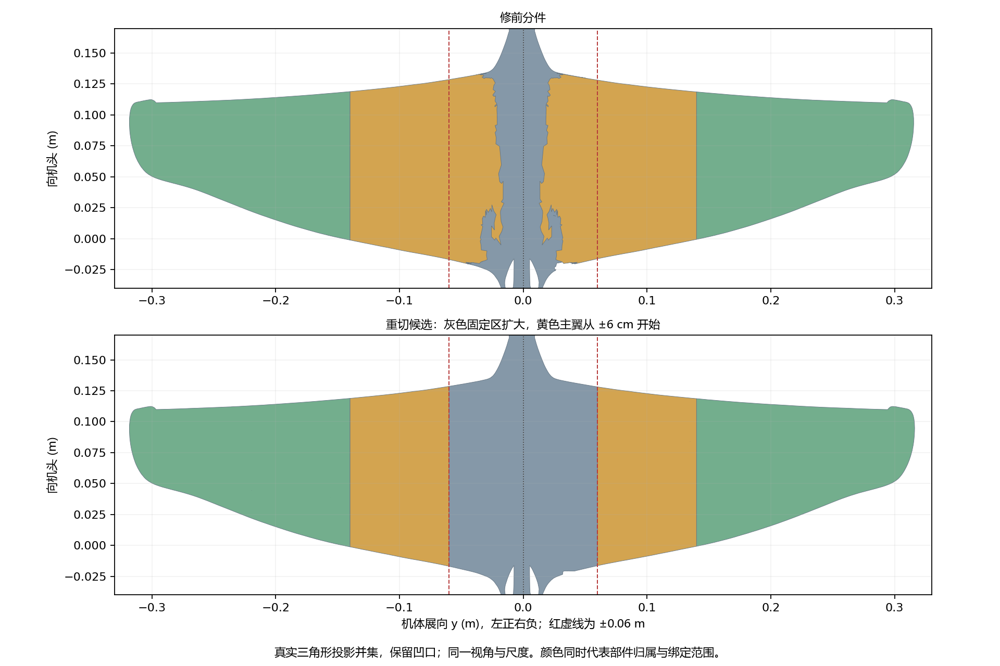

Eagle X 实际接缝检查
2026-10-15 复核：此候选只证明静态接边连续，不作为最终分件。它把内侧一段原翼面划入固定机身，黄色活动主翼面积减少约35%；动态翼根仍未修好。当前线上模型尚未替换。
黄色主翼为什么向外移

上图为旧分件，下图为重切候选。红虚线是展向正负6厘米。固定灰色区域扩大，黄色主翼的内侧边界外移；这一位置尚未确认是正确的翼身接口。
按当前显示尺度的俯视投影，候选左、右黄色面积分别为105.3、105.9平方厘米，绿色为150.5、153.3平方厘米。左右差分别约0.55%与1.80%，并非严格对称。
真实动作中哪里分开
 右翼静止：锯齿状部件接口。
右翼静止：锯齿状部件接口。 右翼迎角反向：翼根与机身之间露出背景。
右翼迎角反向：翼根与机身之间露出背景。灰蓝色是机身，黄色是主翼，绿色是翼尖。每个三角形按导出模型实际姿态绘制，没有轮廓填色、贴图透明或补洞。
静态接口重切前后

原始完整曲面重新分件。左图为旧接口，右图为连续重切；原曲面总面积保持一致，没有增加遮盖面。
拍动 迎角 折叠 组合动作
视频左边为旧分件，右边为静态重切候选。右边的动态翼根仍待处理；主翼与翼尖已通过全部 301 帧接缝检查。
两侧分别检查

从上到下为静止、拍动、迎角正向、翼尖上反；左列为模型左侧，右列为模型右侧。另有迎角反向、翼尖下折及组合动作的独立近景。